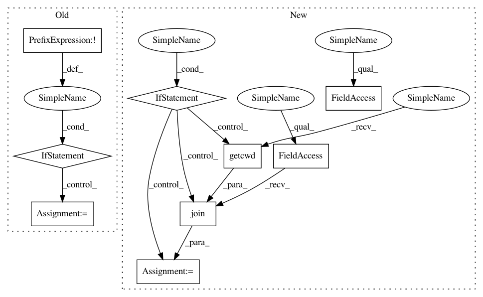

ea79dec957fe59e5f1867a98e916248bcac111f8,examples/mujoco_all_sac_real_nvp_hierarchy.py,,get_variants,#Any#,206
Before Change
env_params = ENV_PARAMS[args.env]
params = COMMON_PARAMS
params.update(env_params)
if not params.get("low_level_policy_path"):
params["low_level_policy_path"] = args.low_level_policy_path
vg = VariantGenerator()
for key, val in params.items():
if isinstance(val, list):
vg.add(key, val)
After Change
params = COMMON_PARAMS
params.update(env_params)
if args.mode == "local":
trained_policies_base = os.path.join(os.getcwd(), "sac/policies/trained_policies")
elif args.mode == "ec2":
trained_policies_base = "/root/code/rllab/sac/policies/trained_policies"
params["low_level_policy_path"] = [
os.path.join(trained_policies_base, p)
for p in params["low_level_policy_path"]
]
In pattern: SUPERPATTERN
Frequency: 3
Non-data size: 9
Instances
Project Name: rail-berkeley/softlearning
Commit Name: ea79dec957fe59e5f1867a98e916248bcac111f8
Time: 2018-05-22
Author: kristian.hartikainen@gmail.com
File Name: examples/mujoco_all_sac_real_nvp_hierarchy.py
Class Name:
Method Name: get_variants
Project Name: tflearn/tflearn
Commit Name: 2399144826ce08e9052859539450fd779678d4de
Time: 2016-12-19
Author: aymeric.damien@gmail.com
File Name: tflearn/helpers/trainer.py
Class Name: Trainer
Method Name: restore
Project Name: tflearn/tflearn
Commit Name: 2399144826ce08e9052859539450fd779678d4de
Time: 2016-12-19
Author: aymeric.damien@gmail.com
File Name: tflearn/helpers/trainer.py
Class Name: Trainer
Method Name: save
Project Name: rail-berkeley/softlearning
Commit Name: ea79dec957fe59e5f1867a98e916248bcac111f8
Time: 2018-05-22
Author: kristian.hartikainen@gmail.com
File Name: examples/mujoco_all_sac_real_nvp_hierarchy.py
Class Name:
Method Name: get_variants